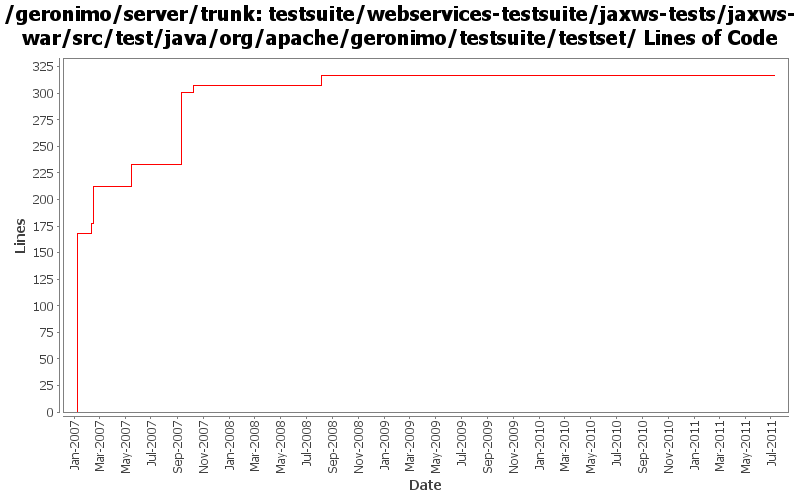

[root]/testsuite/webservices-testsuite/jaxws-tests/jaxws-war/src/test/java/org/apache/geronimo/testsuite/testset

| Author | Changes | Lines of Code | Lines per Change |
|---|---|---|---|
| Totals | 11 (100.0%) | 405 (100.0%) | 36.8 |
| gawor | 5 (45.5%) | 189 (46.7%) | 37.8 |
| prasad | 1 (9.1%) | 168 (41.5%) | 168.0 |
| dims | 3 (27.3%) | 46 (11.4%) | 15.3 |
| xuhaihong | 1 (9.1%) | 1 (0.2%) | 1.0 |
| jdillon | 1 (9.1%) | 1 (0.2%) | 1.0 |
GERONIMO-6058 Replace StringBuffer usage with StringBuilder
1 lines of code changed in 1 file:
add classes generated by wsgen to module classpath (GERONIMO-3793)
17 lines of code changed in 1 file:
sprinkle some timeouts
6 lines of code changed in 1 file:
fix test. jax-ws assumes unqualified schema
4 lines of code changed in 1 file:
improved tests and added a basic test case for exception handling
137 lines of code changed in 1 file:
improved tests to test wsdl/schema file publishing. deploy the same service with wsdl and without.
25 lines of code changed in 1 file:
Std props
1 lines of code changed in 1 file:
GERONIMO-2849 - service-ref app client test
GERONIMO-2850 - CXF: initial web service support for EJBs
1 lines of code changed in 1 file:
Fix for GERONIMO-2825 - CXF and spring version update
Fix for GERONIMO-2826 - Test case to test invocations using service-ref
Fix for GERONIMO-2830 - Updated dependencies for ejb-based tests
Fix for GERONIMO-2836 - Improvements for CXF integration
Fix for GERONIMO-2840 - Minor fixes
35 lines of code changed in 1 file:
Make the test case reflect the wsdl being used by adding other methods mentioned in the wsdl. added a xjc task in the pom.xml to generate the types needed for the fault. Ran the existing tests with both axis2 and cxf. Need to add more tests for the newly added methods.
10 lines of code changed in 1 file:
* moved itests/cxfPojoWS/war to webservices-testsuite/jaxws/jaxws-war
168 lines of code changed in 1 file: